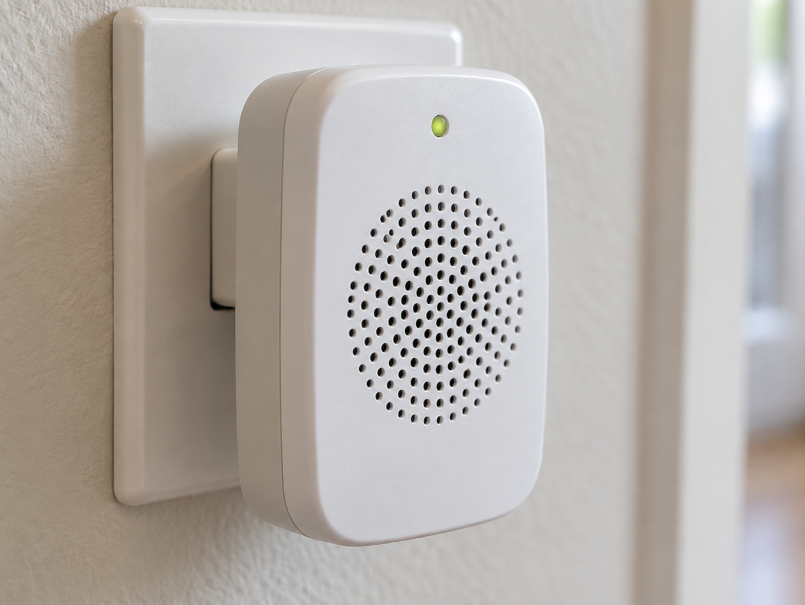
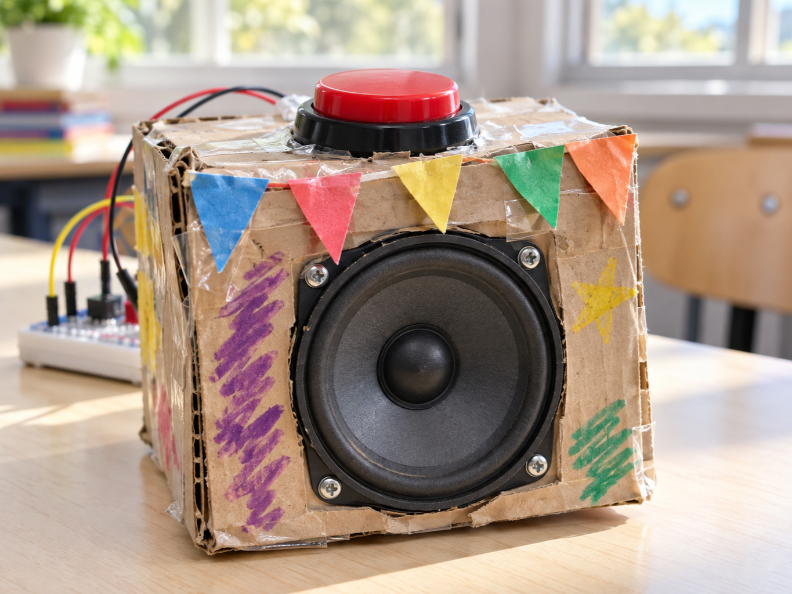

Door chime
DetectDoor button is pressed
DecideWhich chime to use
DoPlay the notes
A small passive speaker turns a changing electrical signal into sound.
Current through its coil moves a cone backwards and forwards, pushing the air.
The 220 ohm resistor shown here protects the GPIO; it also keeps this simple circuit fairly quiet.


from gpiozero import TonalBuzzer
speaker = TonalBuzzer(17)
speaker.play("E4")from picozero import Speaker
speaker = Speaker(16)
speaker.play("E4", duration=1)